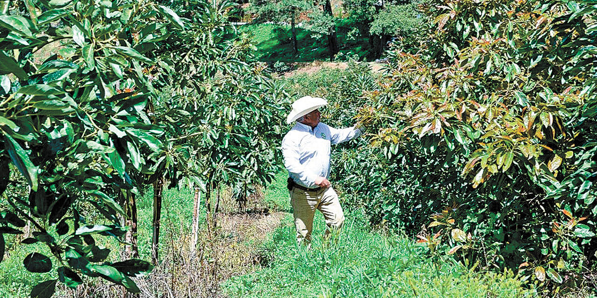

Nuestra Raíz: El Productor Local
Nuestra cocina comienza mucho antes de encender los fogones; comienza en el campo. Creemos firmemente en el valor de nuestra comunidad, por ello, trabajamos mano a mano con productores locales de Morelos.
Ellos son el pilar fundamental y nuestros proveedores estrella. Al elegir ingredientes cultivados en nuestra propia tierra, no solo garantizamos frescura y calidad insuperable en cada platillo, sino que también fortalecemos la economía de nuestras familias morelenses. Para Iguanas Green's, el compromiso local es la clave para mantener vivo el sabor auténtico de la Fonda Fina.